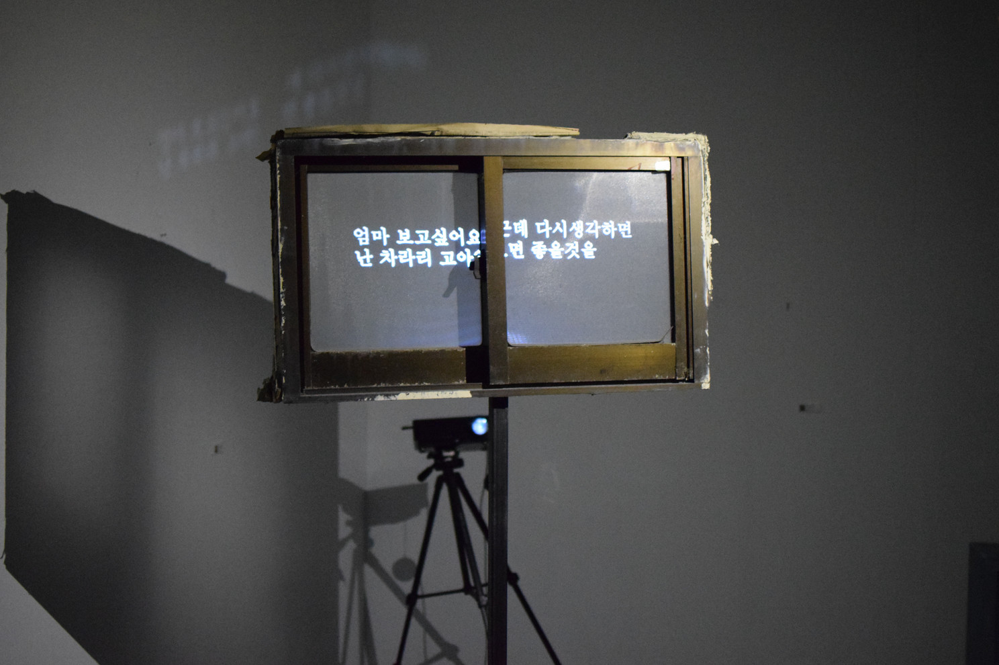
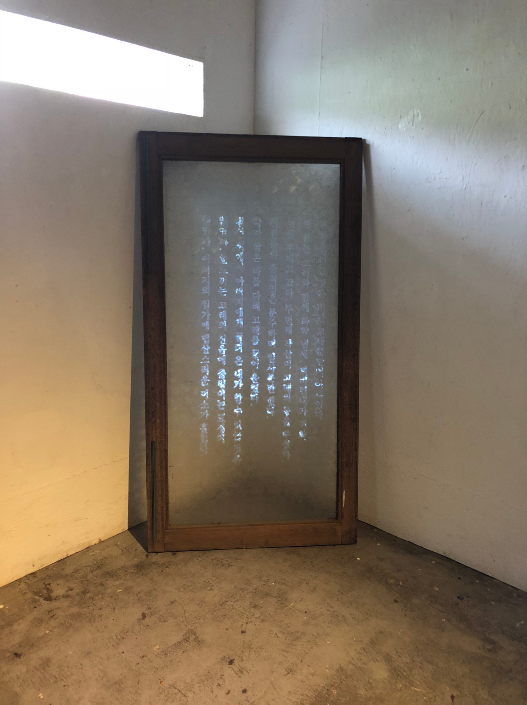
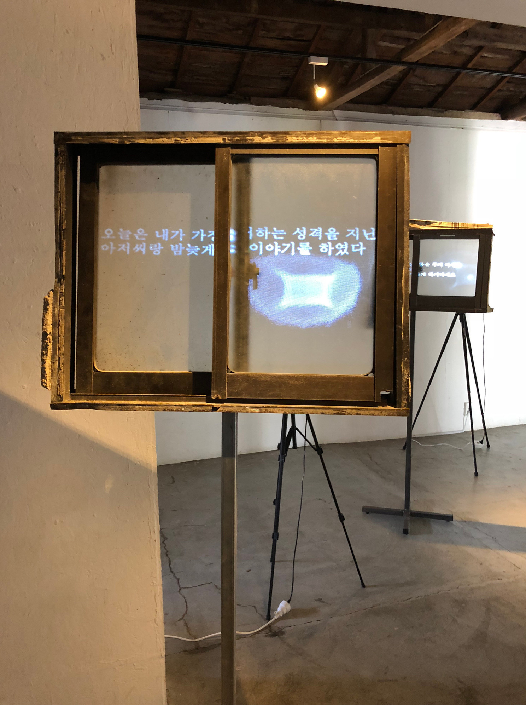
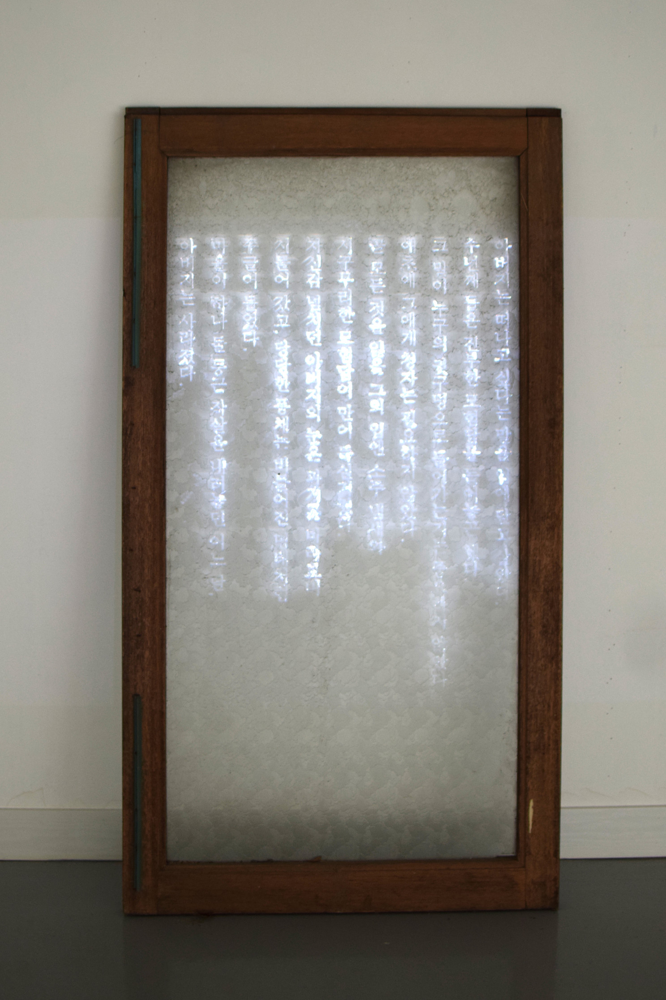
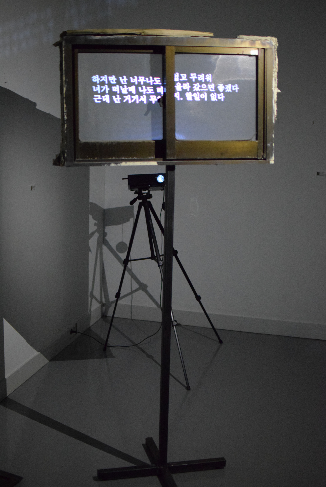
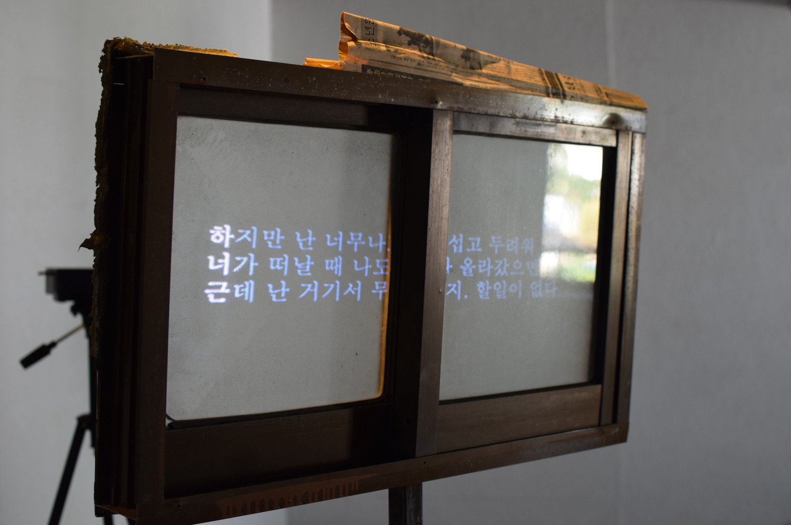
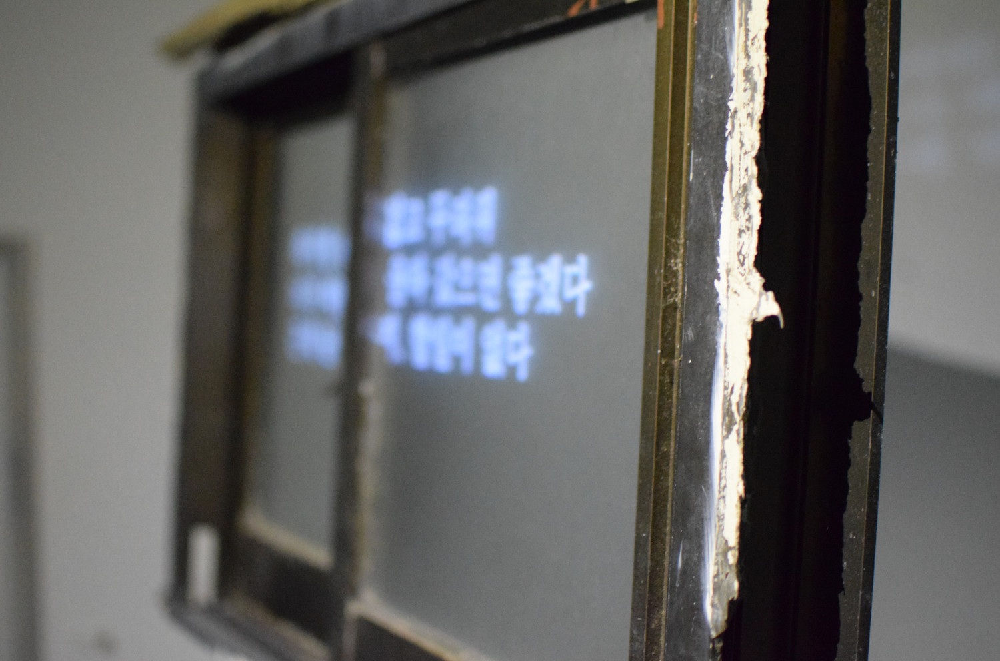
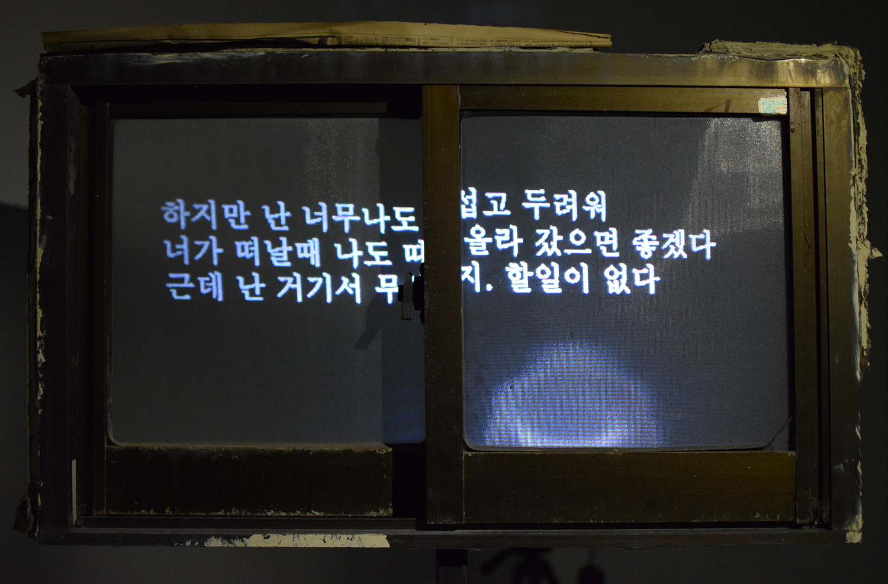
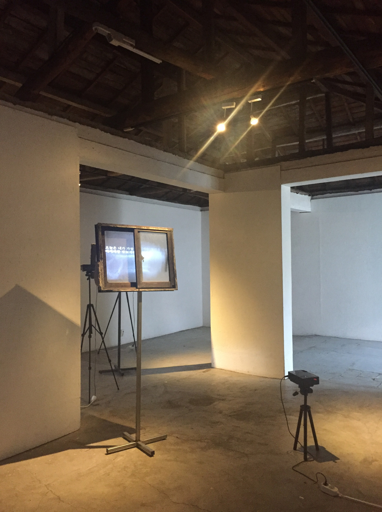

Windows diary
일기창

Windows diary 197-13, 78cm x 172cm x 50cm, projection on window, 2018
일기창 197-13, 78cm x 172cm x 50cm, 폐가에서 수집해 온 창문 위 프로젝션, 2018

Windows diary 131, 74cm x 143cm x 3cm, projection on window, 2018
일기창 131, 74cm x 143cm x 3cm, 폐가에서 수집해 온 창문 위 프로젝션, 2018







‘Windows diary 일기창’ 을 진행하며 ‘구분과 규정’ 이라는 키워드에 집중하고 있다. 1인칭을 넘어 3인칭의 시점을 다루려 할 때, 구체적으로 장생포라는 지역과 집단의 기억을 다루려 할 때, 구분과 규정의 모호함이 나타났다. 이방인, 외부인으로서 나는 결코 내부인의 관점을 읽어 낼 수 없다. 나는 역사적, 사회적 배경을 통해 집단의 기억을 쫓아갈 뿐이다. 그러던 중 나는 이곳에서 어떤 일기장을 발견했다. 그것은 나에게 외부인으로서 내부를 더 자세히 들여다 볼 수 있는 단서가 되었다. 그리고 나는 이것을 통해 내부인의 동의 없는 외부의 규정을 하려 한다.
- 1991년도에 쓰여진 일기장의 주인은 장생포에 거주하는 당시 20대 초반으로 추정되는 여성이다. 일기장을 통해 나는 간접적이게 나마 내부인의 시점을 가질 수 있게 되었다. 하지만 애초 내가 원했던, 생각했던 고민과는 달랐다.